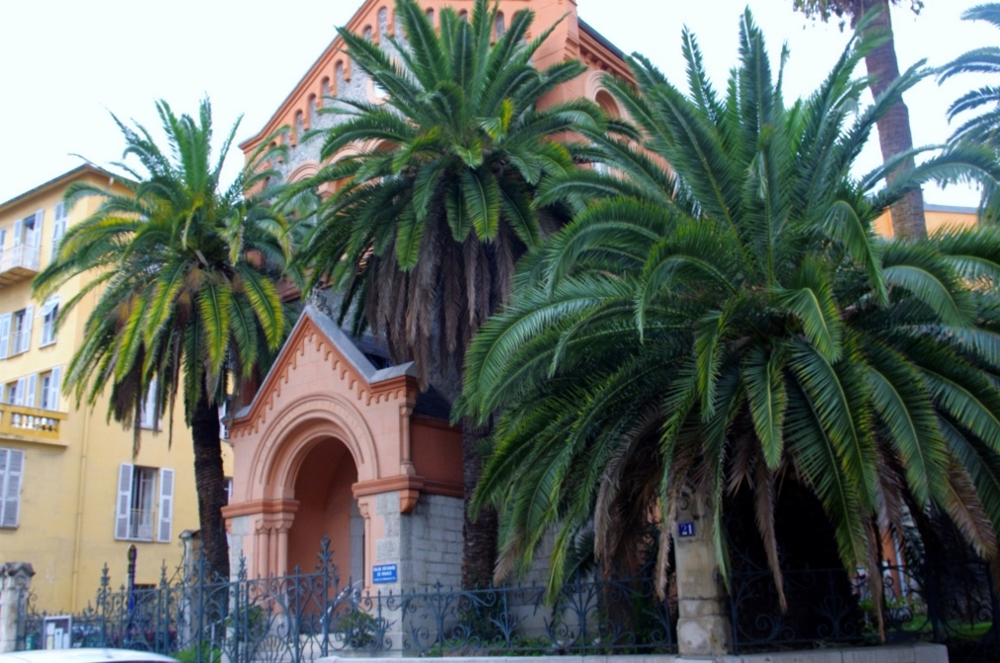

Ментон - маленькая Италия

Европейская аристократия облюбовала Ментон в 19м веке. Королева Виктория отдыхала здесь в 1882 году, а русское сообщество было настолько велико, что они построили свою собственную церковь.Гоные склоны Ментона сделаны для цитрусовых, и Ментон был знаменит своими апельсинами и лимонами ещё с тех времён. Каждый февраль здесь проходит фестиваль лимонов.
Мы посетим ботанический сад Вал Рахме - маленький райский уголок, являющийся остатком тех дней, когда только дворяне и богачи имели средства чтобы жить на Французской Ривьере.
Вал Рахме был основан лордом Рэдклиффом, когда-то губернатором Мальты, для выращивания тропических и субтропических растений из Азии и Южной Америки. Мы увидим даже дерево торомиро, эндемичное для острова Пасхи, но теперь вымершее в дикой природе.
По желанию мы посетим музей первобытной истории, музей картин и скульптур, музей Жана Кокто и украшенный им зал свадебных церемоний - один из самых необычных на французском побережье.
Мы увидим Базилику Сен-Мишель, заказанную Оноре 2ым монакийским, но не завершенным до 19-го века - роскошную барочную церквь, где мы убедимся что Ментон был более итальянский, чем французский, на протяжении большей части своей истории.
Над этой базиликой мы увидимо место, где когда-то стоял средневековый замок Ментона, а теперь находится кладбище с удивительными перспективами города, порта и гор. Здесь похоронен, например, Уильям Вебб Эллис, которому приписывают изобретение игры в регби в начале 19-го века, когда он взял мяч и побежал вместе с ним во время футбольного матча.
Мы увидим сад Серр-де-ла-Мадоне, заложенный богатым американцем Лоуренсом Джонстоном, который смешивает террасированные субтропические сады вокруг отражающих бассейнов и средиземноморского леса с зонтичными соснами.
Мы увидим русскую православную церковь 1890-х годов с иконостасом из тосканского каррарского мрамора, с иконами, написанными русским мастером Карлом Брюлловым в византийском стиле.
Мв посетим работающий со вторника по воскресенье крытый рынок местных продуктов питания где вы получите дружеский прием и почувствуете себя дегустаторами сыра, мяса и продуктов из цитрусовых.
Чтобы поделиться достопримечательностями Ментона(поделившимся - скидка на эту экскурсию), а также узнать что сейчас на фотографии, жмите на свою соцсеть:
вКонтакте:
 .
Facebook:.
МойМир(mail.ru):.
Одноклассники:
.
Facebook:.
МойМир(mail.ru):.
Одноклассники: .
Twitter:.
.
Twitter:.
 planetmail.com.
planetmail.com.